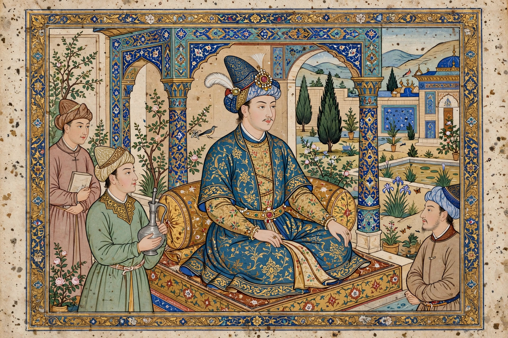

| Shah Rukh | |
|---|---|
 Shah Rukh Mirza, Timurid ruler | |
| Born | 20 August 1377, Samarkand |
| Died | 13 March 1447 (aged 69), Rey |
| Reign | 20 February 1405 – 13 March 1447 |
| Dynasty | Timurid |
| Father | Timur |
| Spouse | Gawhar Shad |
| Issue | Ulugh Beg, Baysunghur, Ibrahim Sultan, Muhammad Juki |
Shah Rukh (Persian: شاهرخ; 20 August 1377 – 13 March 1447) was the fourth son of the Central Asian conqueror Timur and ruler of the eastern portion of the Timurid Empire from 1405 to 1447. Unlike his father, Shah Rukh was a statesman and patron rather than a campaigner of conquest: his long reign brought stability, prosperity, and a brilliant cultural renaissance to Persia and Transoxiana, centred on his capital at Herat.
Governor of Khorasan from 1397, Shah Rukh held Herat when Timur died in 1405. In the ensuing succession struggle he outmanoeuvred his nephew Khalil Sultan, taking Samarkand in 1409, and gradually reunified most of Timur's empire except the westernmost lands. He campaigned three times against the Qara Qoyunlu in Azerbaijan but preferred diplomacy and tribute to annexation, and maintained embassies with Ming China, whose records (notably the diary of Ghiyath al-Din Naqqash) detail his court.
Shah Rukh moved the imperial capital to Herat, which under him and his wife Gawhar Shad became a centre of Persian art, architecture, and learning. Gawhar Shad's mosque and mausoleum complex in Herat and her mosque in Mashhad are masterpieces of Timurid architecture. His sons were themselves famous patrons: Ulugh Beg, astronomer-king of Samarkand, and Baysunghur, whose Herat atelier produced celebrated illuminated manuscripts. Shah Rukh's piety, justice, and encouragement of trade made his reign a byword for good government in Persian historiography.
Shah Rukh died in 1447 at Rey while campaigning against a rebellious grandson. His empire quickly fragmented in succession wars among his descendants, though the cultural flowering he sponsored endured in Herat under Sultan Husayn Bayqara and, through his descendant Babur, shaped Mughal India.
Timur · Ulugh Beg · Herat · Shahrisabz · Timurid Empire